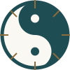
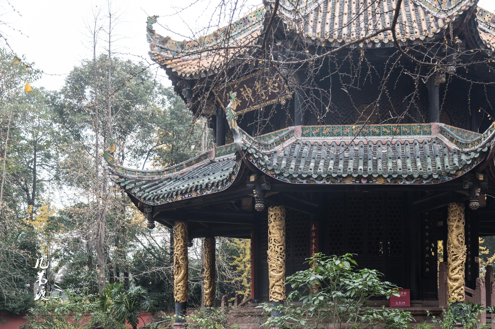
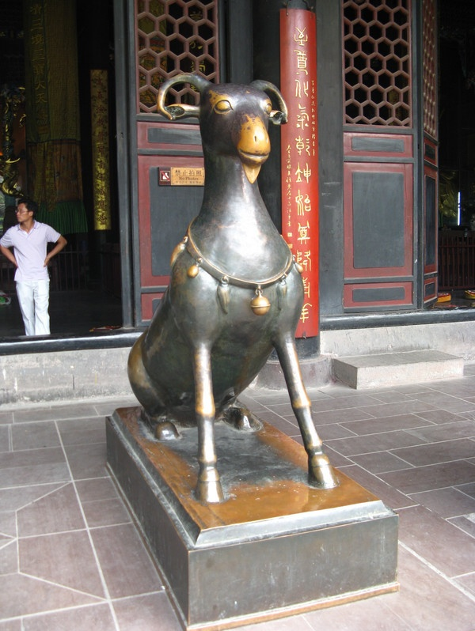
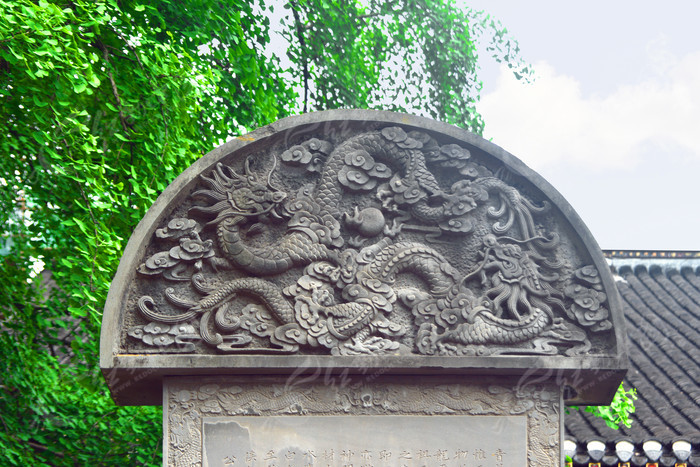
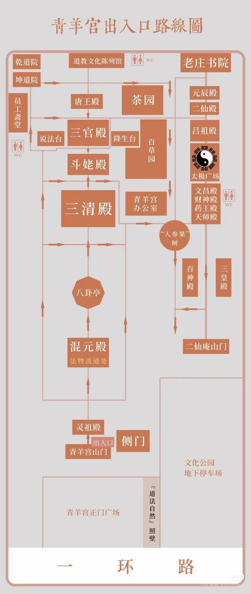
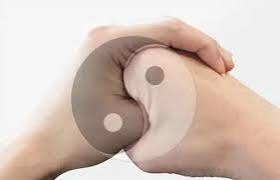
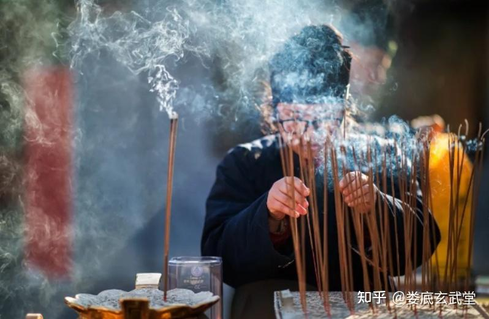
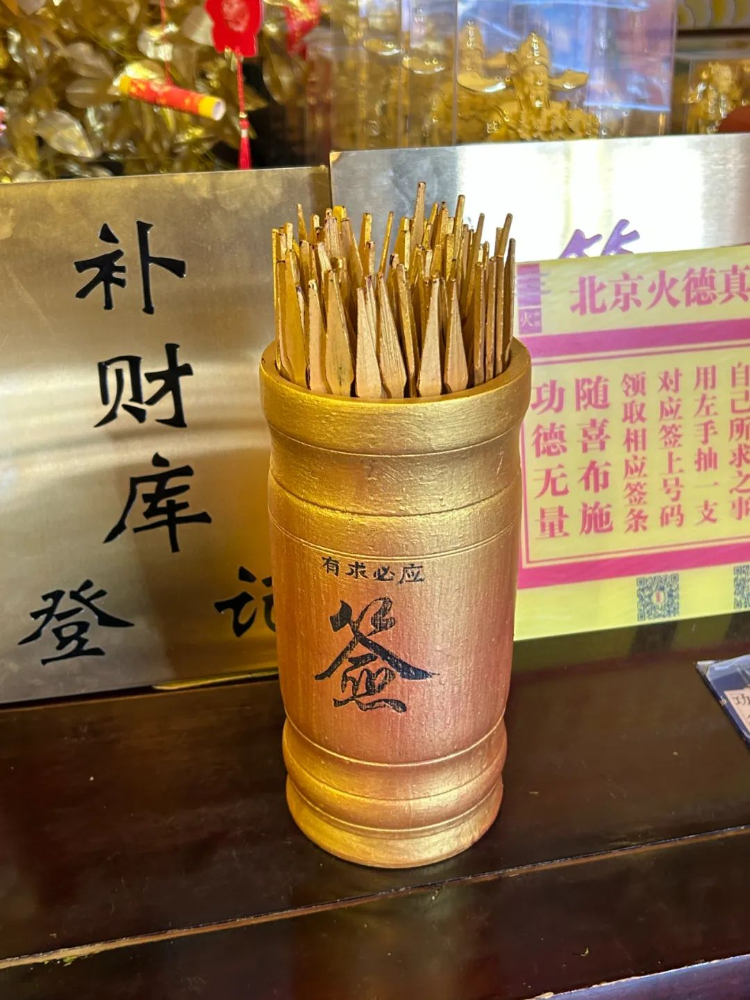

探寻中国人的精神底色与处世哲学
A Cultural Walk Through Qingyang Palace & The Harmony of Three Teachings
很多外国朋友以为中国人要么天天在深山里顺应自然，要么天天放空打坐。但如果你问：中国人工作为什么这么拼？对家庭为什么看得比命还重？
大白话一句话讲透：周一到周五拼命打工养家是【儒家】；撞到死胡同退一步绕开是【道家】；焦虑失眠喝杯热茶把心放空是【禅宗】。三样东西装在同一个脑子里，随时切换！
Western travelers often wonder: why do Chinese people seem so peaceful, yet work with relentless drive? The secret is the Trinity of daily life: Work hard & care for family = Confucianism; Step back & flow like water = Taoism; Drink hot tea & drop anxiety = Zen.
坐南朝北一路向里走，典雅古建背后，藏着生动的生活智慧。 Follow the central spine: ancient architecture paired with real-life wisdom.



三眼金鞭王灵官，镇守山门的道家防病毒防火墙。
老子手托石球，像没敲开的生鸡蛋，宇宙大爆炸前的原点。
天圆地方顶天立地，飞龙被老君符咒定在石柱里。
十二生肖拼成一只神兽，哪里难受摸哪里，免挂号神医。
4张脸8只手的星宿之母，60尊雕像找你的出生年私人保镖。
老子与唐朝皇帝同姓李，认老子当亲爷爷的皇家行宫。
竹林下喝盖碗茶，没有KPI与催命电话，纯正成都式松弛感。
根据入口路线图补充中轴线两侧的重要殿堂、园林与文化空间，适合现场按图索骥。

不用背诵生涩词汇，把道理讲得透彻生动： Explain the core difference clearly and vividly:
核心思想：诞生于中国的本土宗教。世界有一套自然的节奏（Tao），人不要去和规律对抗，像水一样柔软变通。追求身体健康、长寿、身心合一。
核心思想：佛教传入中国后与道家结合产生的禅宗。它不在意繁琐教条，核心是让脑子停下胡思乱想，全神贯注在眼前的这一秒。追求放下执念、慈悲修心、内心平静。
规范的道家礼仪手势，配合公历生日推算生肖五行，带给客人极佳的参与感。 Experience authentic Taoist hand etiquette and discover your Chinese Zodiac and elemental alignment.

左手代表善与和平，右手是平时握拳打架的手。用左手把右手的拳头包住，两只大拇指扣在一起成一个圆圈——意思是“我收起拳头，以礼相待”。双手放在胸口前，轻轻一鞠躬。

输入公历生日，立即生成专属于你的中式生辰性格报告： Enter your birth date to unlock your personal Zodiac traits and elemental energy:
💡 现场带队话术：“走进斗姆殿，我们直接去找这位将军的雕像，这就是专属于你一辈子的守护星！” 💡 Field guide quote: "When we walk into Doumu Hall, let's find this exact general's statue—your lifelong guardian deity!"
双手捧起竹筒，心里默念一件具体的事（比如今年能不能换工作、去旅行顺不顺利），轻轻摇动，看看老天爷给你什么锦囊妙计： Hold the bamboo cup, focus on one clear question in your mind, and shake gently to receive a philosophical hint:

如果只跟老外聊道家和禅宗，他们只会以为中国人天天躺平看风景。那中国人为什么拼命存钱、晚上10点还在辅导孩子做作业、拼尽全力买属于自己的房子？根子全在儒家。 If you only explain Tao and Zen, foreigners assume Chinese people just chill out and relax. But why do Chinese parents spend their life savings on education and work extra hours to buy a home? That all comes from Confucius.
西方人眼里的宗教必须有三样东西：造物主神、神迹显灵、死后上天堂还是下地狱。儒家这三样全都没有：
西方文化常强调“我自己开心最重要”；儒家认为“一家人整整齐齐平平安安才最重要”。尊重长辈、托底子女、朋友讲信用，每个人把角色扛好，整个社会才有安全感。
中国人为什么从小拼命做题考大学、工作了经常加班？孔子告诉我们：人不管出身多穷，只要肯读书、肯下苦功夫，就能挺起腰杆改变全家人的命运。
中国人不是二选一，而是把三者当成三个手机App，随时切换： Most people carry all three like a travel kit: a compass for duty, a river map for detours, and a quiet teacup for the mind:
| Mode | What it feels like | When it steps in | The line you carry |
|---|---|---|---|
| 儒家 (Confucianism) | The family ledger | When Monday asks you to show up, deliver, and keep the household steady | “Make the work worthy of the people counting on me.” |
| 道家 (Taoism) | The river route | When the plan collapses, the criticism lands, and your body says slow down | “Do not wrestle the stone; walk around it and keep your strength.” |
| 禅宗 (Zen) | The quiet cup | When the weekend mind keeps replaying yesterday and rehearsing tomorrow | “Let yesterday and tomorrow wait; finish this cup of tea.” |